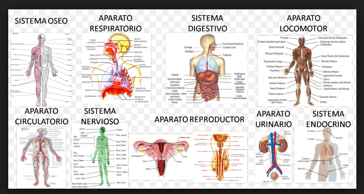

¿Qué son los sistemas del cuerpo humano?
Cuando hablamos de los sistemas del cuerpo humano nos referimos a los distintos conjuntos de órganos que lo componen, colaborando en cada caso con el cumplimiento de algún tipo específico de funciones. Visto así, nuestro cuerpo puede comprenderse justamente como un conjunto simultáneo y yuxtapuesto de sistemas, cuyo correcto funcionamiento nos mantiene con cada uno de estos sistemas del cuerpo humano involucra diversos (y a veces los mismos) órganos, así como conductos, tejidos y glándulas diversas, todo coordinado mediante sustancias endocrinas e impulsos nerviosos, de manera de operar de manera más o menos autónoma según sea el caso.
